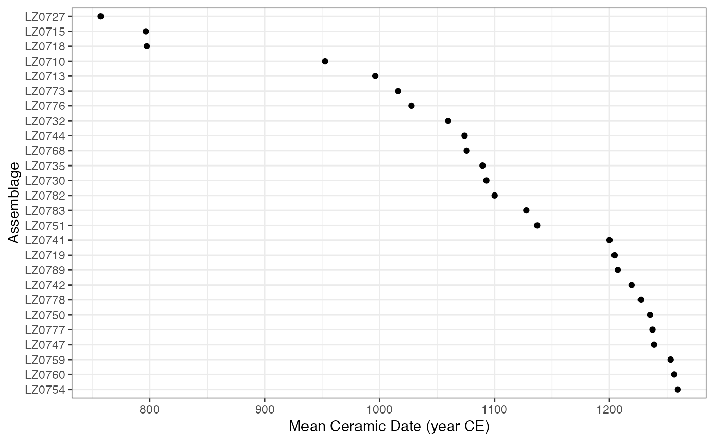

MCD Plot
# S4 method for MeanDate
autoplot(object, ..., select = NULL, decreasing = TRUE)
# S4 method for MeanDate,missing
plot(x, select = NULL, decreasing = TRUE)A MeanDate object.
Currently not used.
A numeric or character vector giving the selection of
the assemblage that are drawn.
A logical scalar: should the sort be increasing or
decreasing?
Other plotting methods:
plot_aoristic,
plot_event,
plot_fit,
plot_time()
N. Frerebeau
## Mean Ceramic Date
## Coerce the zuni dataset to an abundance (count) matrix
data("zuni", package = "folio")
counts <- as_count(zuni)
## Set the start and end dates for each ceramic type
dates <- list(
LINO = c(600, 875), KIAT = c(850, 950), RED = c(900, 1050),
GALL = c(1025, 1125), ESC = c(1050, 1150), PUBW = c(1050, 1150),
RES = c(1000, 1200), TULA = c(1175, 1300), PINE = c(1275, 1350),
PUBR = c(1000, 1200), WING = c(1100, 1200), WIPO = c(1125, 1225),
SJ = c(1200, 1300), LSJ = c(1250, 1300), SPR = c(1250, 1300),
PINER = c(1275, 1325), HESH = c(1275, 1450), KWAK = c(1275, 1450)
)
## Calculate date midpoints
mid <- vapply(X = dates, FUN = mean, FUN.VALUE = numeric(1))
## Calculate MCD
mc_dates <- mcd(counts, dates = mid)
head(mc_dates)
#> LZ1105 LZ1103 LZ1100 LZ1099 LZ1097 LZ1096
#> 1162.5000 1137.8378 1154.4643 1090.6250 1092.1875 841.0714
## Plot
plot(mc_dates, select = 100:125)

## Bootstrap resampling
boot <- bootstrap(mc_dates, n = 30)
head(boot)
#> min mean max lower upper Q25 Q50
#> LZ1105 1128.125 1162.5000 1190.6250 1155.8160 1169.1840 1149.2188 1163.2812
#> LZ1103 1077.027 1132.7252 1190.8784 1122.5141 1142.9364 1111.4020 1132.9392
#> LZ1100 1091.071 1163.0357 1207.1429 1153.9644 1172.1071 1150.0000 1165.1786
#> LZ1099 1081.250 1091.7708 1100.0000 1090.0514 1093.4903 1088.2812 1093.7500
#> LZ1097 918.750 1072.8125 1193.7500 1048.7312 1096.8938 1028.1250 1082.8125
#> LZ1096 737.500 860.0595 996.4286 831.1169 889.0021 789.2857 841.0714
#> Q75
#> LZ1105 1178.9062
#> LZ1103 1149.4088
#> LZ1100 1178.3482
#> LZ1099 1093.7500
#> LZ1097 1120.3125
#> LZ1096 931.6964
## Jackknife resampling
jack <- jackknife(mc_dates)
head(jack)
#> mean bias error
#> LZ1105 1162.4206 -1.349206 28.22921
#> LZ1103 1137.4923 -5.874698 68.74235
#> LZ1100 1153.8196 -10.959746 50.11661
#> LZ1099 1090.7242 1.686508 10.14794
#> LZ1097 1091.6749 -8.713624 71.14024
#> LZ1096 849.7024 146.726190 268.67089